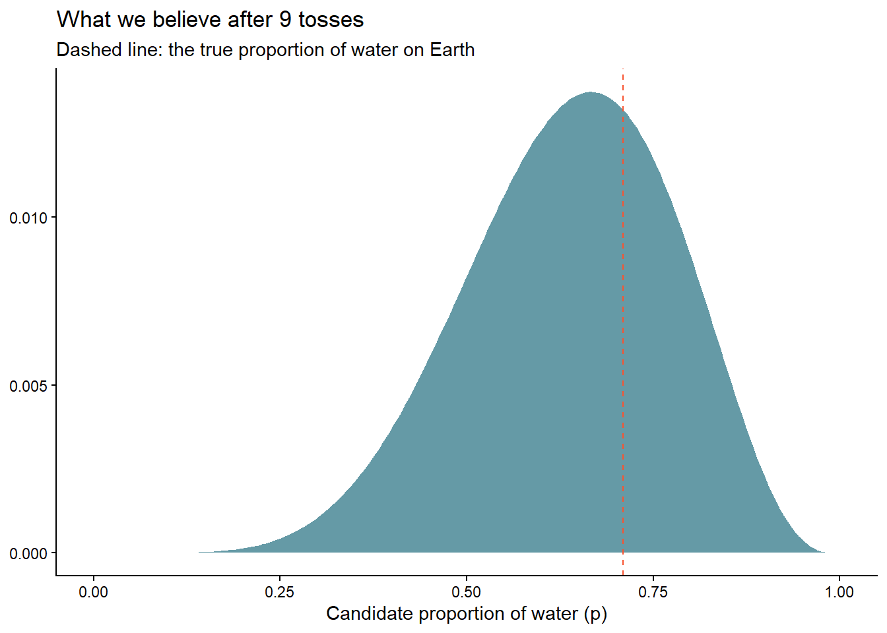
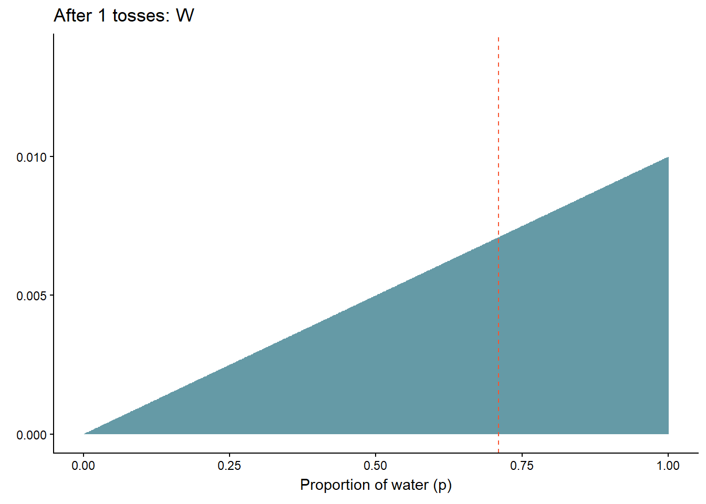

Toss a globe, count the water, and watch a probability distribution learn. A gentle first contact with Bayesian inference, animated with the tools from session 4.
Author
Nelson Amaya
Published
July 5, 2026
Modified
October 5, 2026
“It appears to be a quite general principle that, whenever there is a randomized way of doing something, then there is a nonrandomized way that delivers better performance but requires more thought.” –E.T. Jaynes
Level: Advanced · Time: ~60 min · Prerequisites: Draw your assumptions before drawing your conclusions · Tools: R running live in your browser (webR) – no installation needed
You will learn to
Update a prior belief into a posterior, one observation at a time.
Distinguish a Bayesian posterior from a frequentist confidence interval.
Watch a probability distribution learn, animated, as data arrives.
Run and modify live R code directly in the browser via webR.
Part I: Why Bayes?
Every statistics course you took taught you to ask: how surprising is my data, assuming some hypothesis is true? Bayesian analysis asks the question you actually care about, in the direction you actually care about: given the data I saw, what should I now believe?
The machinery is one line –Bayes’ theorem– and one discipline: beliefs are distributions, not numbers, and data doesn’t replace them, it updates them.
What proportion of the Earth is water?
The classic teaching example, from Richard McElreath’s Statistical Rethinking1: toss an inflatable globe in the air, catch it, and write down whether your index finger landed on Water or Land. Each toss is a noisy observation of one number: \(p\), the true proportion of the Earth covered by water (about 0.71, but pretend you don’t know).
Nine tosses give us W L W W W L W L W –six waters. What should we believe about \(p\)? We compute it with a grid approximation: try every candidate value of \(p\), score how well each explains the data, and weigh by what we believed before.
library(tidyverse)1tosses <-c("W","L","W","W","W","L","W","L","W")2globe_posterior <-tibble(p =seq(0, 1, length.out =200)) |> dplyr::mutate(3prior =1,4likelihood =dbinom(sum(tosses =="W"), size =length(tosses), prob = p),5posterior = likelihood * prior /sum(likelihood * prior) )globe_posterior |>ggplot(aes(x = p, y = posterior)) +geom_area(fill ="#226F7F", alpha =0.7) +6geom_vline(xintercept =0.71, linetype ="dashed", color ="#F75431") +labs(title ="What we believe after 9 tosses",subtitle ="Dashed line: the true proportion of water on Earth",x ="Candidate proportion of water (p)", y =NULL) +theme_classic()
1
Our data: nine catches, six fingers on water.
2
The “grid”: 200 candidate values for \(p\) between 0 (all land) and 1 (all water).
3
A flat prior: before tossing, we pretend every proportion is equally plausible. Priors can –and usually should– know more than this.
4
The likelihood: for each candidate \(p\), the probability of seeing 6 waters in 9 tosses. Plain old dbinom() –you have used it since session 4’s coin flips.
5
Bayes’ theorem, literally typed out: posterior ∝ likelihood × prior. The division just makes it sum to one.
6
We never told the code the answer –look where the belief piles up anyway.

Watch the learning happen
A posterior is not a verdict, it is a running belief –so let’s animate it updating toss by toss, with the exact gganimate tools from session 4. Frame \(n\) shows what we believe after the first \(n\) tosses:
library(gganimate)7update_frames <- purrr::map_df(0:length(tosses), \(n) {tibble(p =seq(0, 1, length.out =200)) |> dplyr::mutate(posterior =dbinom(sum(tosses[seq_len(n)] =="W"), size = n, prob = p),posterior = posterior /sum(posterior),n_tosses = n,label =ifelse(n ==0, "Before any data (the prior)",paste0("After ", n, " tosses: ", paste(tosses[seq_len(n)], collapse =" "))) )})update_frames |>ggplot(aes(x = p, y = posterior)) +geom_area(fill ="#226F7F", alpha =0.7) +geom_vline(xintercept =0.71, linetype ="dashed", color ="#F75431") +8labs(title ="{closest_state}",x ="Proportion of water (p)", y =NULL) +theme_classic() + gganimate::transition_states(label, transition_length =2, state_length =3, wrap =FALSE) + gganimate::ease_aes("cubic-in-out")
7
For each \(n\) from 0 to 9, we recompute the posterior using only the first \(n\) tosses –ten snapshots of a mind changing.
8
transition_states() from session 4, nothing new. Watch how the first W rules out \(p = 0\)completely, and how each toss reshapes –but never erases– what came before.

Bayesian updating, one toss at a time
Part II: Your turn to believe
The window below runs R in your browser. Change the prior –make it stubborn (p^10), skeptical of water ((1-p)^3), or opinionated like a geographer (dbeta(p, 7, 3))– and watch how much (or little) the same 9 tosses can teach different minds.
TipPlay more
This repo ships a small Shiny simulator with sliders for the prior and the data –break your intuitions at will. It’s live below, or run it yourself with shiny::runApp("shiny/BayesApp") from the project.
Where next
This was the whole idea of Bayes in one session; the rest is craft. When you are ready: